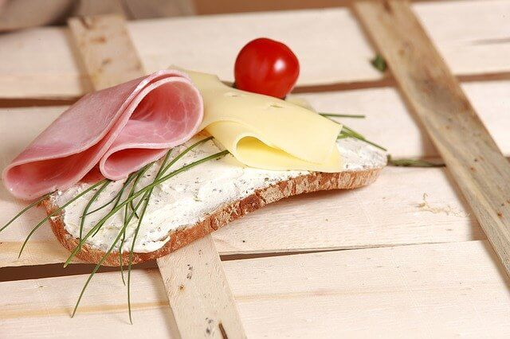

2021/07/14
生酮飲食算是近期最熱門的飲食方式之一，70%的人拿來減肥，30%的人拿來顧身體健康
大部分的人使用習慣之後都會愛上這種飲食方式，但在健身界中90%的人都會反對生酮飲食
生酮飲食真的是這麼有效的減肥飲食嗎？生酮真的對健身者這麼不利嗎？
需要請你先放下你所有對於生酮的偏見，保持中立的角度去看待這篇生酮飲食的文章，我會很誠實的用研究論文跟個人經驗來分析生酮飲食的好與壞。
常常有人會問我生酮飲食怎麼吃，那我們可以先看到下方這張圖
生酮飲食中的餐盤中會有一半是不瘦的肉或蛋，然後一半是蔬菜，大概會長這樣。（這肉看起來很瘦，但我用很多油去料理)
生酮飲食
網路上可能會看到生酮飲食是適量的蛋白質，足夠好的脂肪，以及夠低的醣類，像是70%脂肪、25%蛋白質、5%醣類之類的。
但這會在下篇，” 生酮飲食怎麼吃 “ 中做比較詳細的解釋。
生酮的意思是，讓身體可以產”生“、較多“酮”體的飲食方式，以待在穩定的營養性酮症(Nutritional Ketosis)為目標。
那為什麼要產生酮體？因為酮體是在身體醣類（註1）含量夠低時，燃燒脂肪後的代謝產物，所以血酮濃度高等於就是知道現在正在拿脂肪當作能量燃燒。
要讓身體產生夠多酮體並且知道自己在燃脂，必須有兩個重點，就是肝醣夠低（註2），還有胰島素夠低（註3）。你想知道更多的話，後面有比較長的解釋，但簡單來講就是盡量不要吃高醣類食物，像是澱粉跟糖，然後多吃點菜肉蛋。

之前說過，只要讓胰島素分泌夠低、體內醣量夠低，就可以讓身體產出較多的酮體。
所以其實我們只要盡量避免醣類太高的食物、升胰島素太多的食物，就可以讓身體穩定待在酮症。
以主要營養素比例來講，5%醣類（高FII）、20~25%蛋白質（中FII）、70~75%脂肪（低FII）會是百分之99的人都可以進入穩定營養性酮症的比例。
但我會比較建議以漸進性的方式來慢慢進入生酮飲食。
醣類一天就是低於40克，蛋白質一天大約吃到體重x1~1.4克，脂肪就是隨食慾調整。會這樣做是因為大部分的人一開始是沒辦法吃到這麼多脂肪，心理上會有點畏懼、身理上也會不太適應，所以就先以吃得舒服為主。
如果會算主要營養素，自己選食物吃到目標數據，會是一個比較簡單起始點，之後再做微調就好。
生酮飲食可以非常有效的處置代謝異常疾病，大部分的研究也都是針對這個方向
生酮飲食對於減肥的效率已經確定是非常有效，在減肥中也可以有效維持肌肉，更好的是對其他疾病也有極大的幫助
缺點就是要用來達到長期且穩定的增肌是比較困難的，因為生酮的好處就是壓抑食慾，所以很難會吃夠食物來增肌
當然很多新手其實用生酮還是可以增肌，但老手要用生酮來增肌是沒有研究來做參考的
雖然說有一本書是在教你怎麼用生酮飲食增肌，但要增肌的話就建議用傳統飲食就可以了